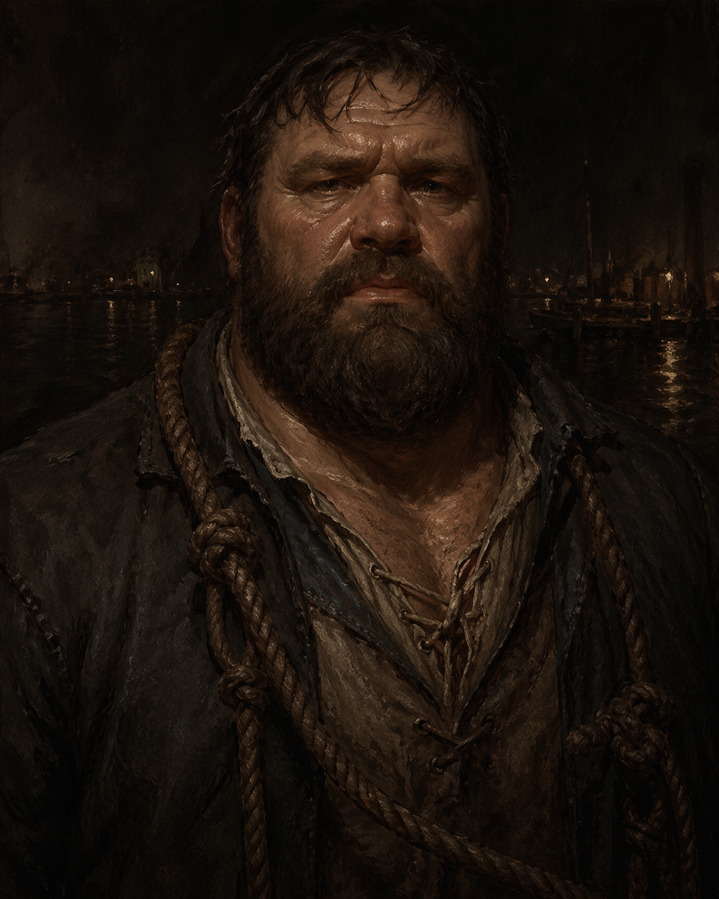

Brick � Orlan Baker
Former dockworker. He knows water. What he's been seeing lately isn't water.
Reference: The Harbor & Waterways ?
Player: Tim
Story Abilities
- Harbor Knowledge — On any score using a canal or water approach, your reconnaissance is treated as one tier better than the roll would indicate. You know how the harbor works — its timing, its gaps, which routes are watched and which aren’t.
- The Tide Tithe — You know the practical rituals of the docks: the right offerings, the whistle, the timing, what to leave and what not to touch. When you attempt a water-based ritual interaction — harbor offerings, the bone whistle, reading a tide shrine — you don’t roll to know the correct method. You already know it. You’ve done it your whole life without understanding what it meant.
- Working Class — +1d on Consort or Sway rolls with dock workers, laborers, Grinders, or common people who would be closed to the rest of the crew. They can tell the difference between someone from their world and someone pretending.
Background
- Full name: Orlan Baker
- Akorosi descent � came up through Labor, worked the docks as a longshoreman
- Instinctive understanding of tides, currents, weight, and the physicality of maritime work
- Sees delayed reflections in water � his reflection moves a half-second behind him, or shows him somewhere he isn't
- These reflections are Watcher influence � passive, observational, not threatening
Vice � Gambling
A longshoreman's vice � straightforward, social, and completely consuming when the stakes climb. Cards specifically. The table is one of the few places where Brick's physical presence doesn't determine the outcome.
Not yet established.
Friend & Foe
A physicker who works the docks � unorthodox methods, no official license, no questions asked about how the wounds happened. Goes by "Sawtooth" on the waterfront and "Stitch" in other parts of the city. Flint knows this person too, under the other name � a shared contact neither of them has mentioned to the other yet.
A vicious thug. The kind of enemy that comes from labor disputes, dockside debts, or a fight that should have ended but didn't. Details TBD, but the animosity is physical and personal.
What the Crew Has Heard
- My parents are friendly ghosts I visit occasionally.
- I wrote a full treatise.
- I cannot read or write.
- I have met the Emperor.
- I am allergic to fish.
Character Sheet
?????????
??????
| Level 1 | Slightly Asphyxiated | � |
| Level 2 | � | � |
| Level 3 | � | |
Prowess attribute track filled (2 XP from warehouse training). Attribute advance taken: +1 dot to Wreck (now 2 dots). Prowess track reset.
- Not to Be Trifled With � You can push yourself to perform a feat of physical force that verges on superhuman, or to engage a small gang on equal footing in close combat.
| Study | ???? | Insight |
| Skirmish | ???? | Prowess |
| Wreck | ???? | Prowess |
| Command | ???? | Resolve |
| Sway | ???? | Resolve |
The Wrong Water
Brick's dockworker instincts fire differently in certain places. In certain water � the harbor at low tide, standing pools in old places, water that shouldn't be still but is � he gets a wrongness-signal. Like something large is beneath it, breathing slowly. This isn't a threat signal. It's a presence signal. He doesn't have a name for what he's reading.
Harbor Connection
The Watcher has been dimly aware of Brick longer than the crew's involvement in any of this. Dockworkers are the people who interact most directly with the harbor compact's physical results � the thing the Watcher does, they live with. His delayed reflections are the Watcher noting him. Whether this becomes something more is an open question.
Connections
- Sawtooth / Stitch � friend; dock physicker; shared contact with Flint under a different name � neither has mentioned it
- Chael � foe; vicious thug; personal animosity, details TBD
- The Watcher � passive supernatural contact; the delayed reflections are a form of attention
- The Docks � his origin, his instincts, his read on what's normal and what isn't
- The Tide Tithe � he's probably performed this superstition himself, without knowing why
Moments to Create
- The Sunken Temple: his wrong-water instincts give him information nobody else is reading
- The Sawtooth/Stitch reveal � Brick and Flint realizing they share a contact
- Chael surfacing � a dockside problem following him into crew business
- A moment where his labor background solves a problem that supernatural expertise couldn't
- The delayed reflections becoming more active � showing him something he needs to see
- A confrontation with what he's been sensing: not a monster, but a presence that has always been there